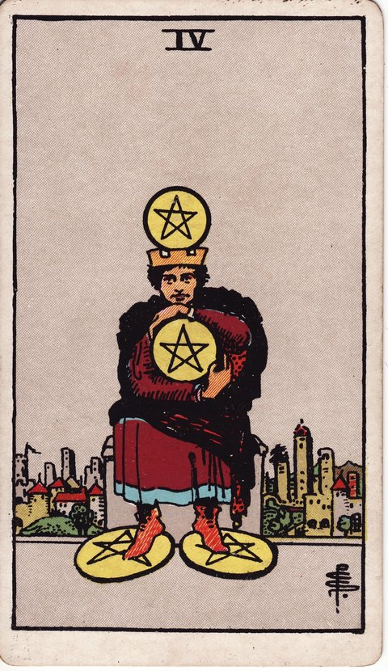

펜타클 · 타로 카드 백과사전
펜타클 4

정방향
키워드: 안정 지향 · 저축과 절제 · 지키려는 마음 · 빈틈없는 방어 · 안온한 울타리 · 각박한 셈법
조언: 지키는 것도 좋지만 가끔은 곳간을 열어 흐르게 하는 여유도 필요합니다.
연애운
솔로
쉽게 곁을 내주지 않고 신중하게 마음의 문을 여는 시기입니다. 확신이 설 때까지 천천히 다가가도 괜찮아요.
커플
함께 사는 것 같은 큰 변화보다 지금처럼 만나는 방식을 유지하고 싶어지는 시기입니다. 변화가 두려운 이유를 스스로 짚어보면 마음이 한결 정리됩니다.
재물운
소비
불필요한 지출을 철저히 줄이고 통장 잔고를 지키는 데 집중하는 시기입니다. 아끼는 데만 집중하기보다 정말 필요한 지출까지 줄이고 있지는 않은지 가끔 점검해보세요.
투자
위험한 투자보다 예금이나 적금 같은 안전한 곳에 자산을 묶어두는 시기입니다. 안정성을 지키는 것도 좋지만 자금을 너무 오래 묶어두면 필요할 때 유동성이 부족할 수 있습니다.
취업운
구직
모험적인 자리보다 고용이 안정된 곳 위주로 신중하게 지원하는 시기입니다. 안정성만 기준으로 삼기보다 실제로 맞는 자리인지도 함께 따져보세요.
이직
이직 제안이 와도 지금 자리의 안정감을 쉽게 포기하지 못하는 시기입니다. 지금 자리에 남는 이유가 정말 안정감 때문인지, 변화가 두려워서인지 구분해볼 필요가 있습니다.
직장운
팀워크
검증된 방식을 지키며 무리한 변화 없이 안정적으로 업무를 이어가는 시기입니다. 검증된 방식이라도 정기적으로 효율을 점검하는 습관을 들여보세요.
개인성과
맡은 업무와 자리를 확실히 지키며 흔들림 없이 자기 몫을 해내는 시기입니다. 자기 몫을 지키는 데 집중하되 주변의 변화에도 눈을 돌려보세요.
사업운
창업준비
창업 자금을 최대한 아껴가며 꼭 필요한 곳에만 신중하게 쓰는 시기입니다. 아끼는 것도 좋지만 초기에 꼭 필요한 투자까지 미루면 오히려 시작이 늦어질 수 있습니다.
운영중
매출을 더 키우기보다 지금 규모를 안정적으로 유지하려는 시기입니다. 유지하는 것도 전략이지만 시장 변화를 놓치지 않도록 가끔은 바깥 흐름도 살펴보세요.
학업운
시험준비
익숙한 교재와 방식을 고수하며 흔들림 없이 실력을 다지는 시기입니다. 익숙함이 주는 안정감은 좋지만 효과가 떨어지는 부분은 없는지 가끔 점검해보세요.
진로고민
이미 투자한 시간을 아끼며 지금의 전공이나 진로를 꾸준히 지켜가는 시기입니다. 지켜가는 이유가 정말 맞는 길이어서인지 되돌아볼 시간도 필요합니다.
건강운
신체
이미 자리 잡은 건강 루틴을 흐트러뜨리지 않고 꾸준히 지켜가는 시기입니다. 꾸준함을 지키되 몸 상태에 맞춰 조금씩 조정하는 유연함도 잊지 마세요.
정신
감정을 크게 티 내지 않고 혼자서 차분히 소화하며 중심을 잡는 시기입니다. 혼자 소화하는 것도 좋지만 가끔은 믿을 만한 사람에게 털어놓는 것도 도움이 됩니다.
대인관계운
새로운 인연
기존 친한 무리를 지키고 싶어 새로운 사람을 신중하게 받아들이는 시기입니다. 신중함이 지나쳐 좋은 인연을 아예 밀어내지는 않는지 살펴보세요.
기존 관계
새로운 사람을 끼워 넣기보다 지금 있는 멤버들끼리의 편안함을 더 소중히 여기는 시기입니다. 익숙한 편안함을 지키는 것과 새로운 인연에 마음을 닫는 것은 다르다는 걸 기억하세요.
명예운
쌓아온 신뢰를 지키기 위해 매사 신중하게 처신하는 시기입니다. 신중함이 지나쳐 소극적으로 비치지 않도록 균형을 잡아보세요.
이사운
지금 사는 곳의 안정감을 지키고 싶어 이동을 신중히 미루는 시기입니다. 정말 지금 자리가 최선인지 가끔은 다른 선택지와 비교해보는 것도 좋습니다.
자식운
아이의 안전한 울타리를 지키기 위해 세심하게 신경 쓰는 시기입니다. 울타리를 지키되 아이가 스스로 시도해볼 여지도 조금씩 남겨두세요.
역방향
키워드: 집착 · 두려움 · 움켜쥔 손 · 조여오는 걱정 · 풀리지 않는 긴장 · 숨 막히는 소유욕
조언: 잃을까 봐 움켜쥔 손을 조금만 풀어도 숨통이 트일 수 있습니다.
연애운
솔로
상처받을까 두려워 마음을 꽁꽁 닫아버려 다가오는 사람마저 밀어낼 수 있는 시기입니다. 한 번에 마음을 다 열려 하지 말고 아주 작은 것부터 조금씩 나눠보세요.
커플
상대를 잃을까 봐 사사건건 확인하고 매이려 하면서 관계가 갑갑해질 수 있는 시기입니다. 불안한 마음을 확인으로 풀기보다 솔직하게 말로 전하는 편이 관계에 더 도움이 됩니다.
재물운
소비
필요한 지출까지 아까워하며 인색하게 굴다 주변과 마찰이 생길 수 있는 시기입니다. 아끼는 기준을 다시 세워 정말 필요한 곳까지 막고 있지는 않은지 점검해보세요.
투자
손실이 두려워 좋은 기회가 와도 묵혀둔 자금을 꺼내지 못할 수 있는 시기입니다. 모든 자금을 한 번에 움직이기보다 작은 금액으로라도 시도해보는 게 두려움을 줄이는 방법입니다.
취업운
구직
안정성만 따지다 정작 괜찮은 기회를 지레 포기하고 있을 수 있는 시기입니다. 포기하기 전에 실제로 그 기회가 얼마나 위험한지 구체적으로 따져보세요.
이직
환경이 나빠져도 두려움 때문에 익숙한 자리를 벗어나지 못하고 있을 수 있는 시기입니다. 지금 남아 있는 게 정말 안정적인 선택인지 다시 한번 냉정하게 따져볼 필요가 있습니다.
직장운
팀워크
낡은 방식을 고집하다 새로운 흐름에 뒤처질 수 있는 시기입니다. 완전히 바꾸기 어렵다면 새로운 방식을 일부만이라도 시험해보세요.
개인성과
업무를 나눠주기 아까워 혼자 끌어안다 오히려 과부하에 시달릴 수 있는 시기입니다. 작은 업무부터 하나씩 넘겨보는 연습이 필요합니다.
사업운
창업준비
돈이 나갈까 봐 필요한 초기 투자마저 미루다 사업 시작이 늦어질 수 있는 시기입니다. 꼭 필요한 최소한의 투자와 미뤄도 되는 지출을 구분해보세요.
운영중
변화를 두려워해 필요한 재투자를 미루다 경쟁에서 뒤처질 수 있는 시기입니다. 지금 아끼는 비용이 나중에 더 큰 손실로 돌아오지 않는지 따져봐야 합니다.
학업운
시험준비
효과가 없는 방식인 걸 알면서도 바꾸기가 두려워 그대로 고집할 수 있는 시기입니다. 한 번에 다 바꾸기보다 작은 부분부터 시험 삼아 바꿔보세요.
진로고민
그동안 들인 시간이 아까워 맞지 않는 진로를 억지로 붙잡고 있을 수 있는 시기입니다. 이미 쓴 시간에 얽매이기보다 앞으로 남은 시간을 기준으로 판단해보세요.
건강운
신체
몸이 보내는 변화의 신호를 무시한 채 예전 방식만 고집하다 탈이 날 수 있는 시기입니다. 더 늦기 전에 지금 방식을 점검받을 필요가 있습니다.
정신
통제할 수 없는 상황에 대한 불안감으로 마음이 자꾸 조여올 수 있는 시기입니다. 통제할 수 없는 것과 할 수 있는 것을 구분해보면 불안이 조금은 가라앉습니다.
대인관계운
새로운 인연
새로운 사람에 대한 지나친 경계 때문에 좋은 인연이 될 사람도 놓칠 수 있는 시기입니다. 경계하는 마음이 어디서 온 건지 스스로 짚어보면 판단이 한결 편해집니다.
기존 관계
친구를 향한 소유욕이나 간섭이 지나쳐 오히려 거리가 멀어질 수 있는 시기입니다. 상대의 다른 관계까지 존중하는 여유를 가지면 오히려 사이가 편해집니다.
명예운
평판에 흠이 갈까 봐 지나치게 방어적으로 굴다 오히려 인색해 보일 수 있는 시기입니다. 방어적인 태도보다 솔직하게 상황을 설명하는 편이 오히려 신뢰를 지키는 데 도움이 됩니다.
이사운
지금 사는 곳이 불편해졌는데도 낯선 곳으로 옮기는 것이 겁나 계속 눌러앉아 있을 수 있는 시기입니다. 불편함을 참는 비용과 옮기는 수고를 함께 저울질해보세요.
자식운
지나친 보호와 통제가 아이의 자율성을 억누를 수 있는 시기입니다. 안전을 지키는 선 안에서 아이 스스로 결정할 여지를 조금씩 늘려보세요.
같은 슈트: 펜타클 에이스 · 펜타클 2 · 펜타클 3 · 펜타클 4 · 펜타클 5 · 펜타클 6 · 펜타클 7 · 펜타클 8 · 펜타클 9 · 펜타클 10 · 펜타클 시종 · 펜타클 기사 · 펜타클 퀸 · 펜타클 킹
홈에서 직접 카드 뽑아보기 ↗